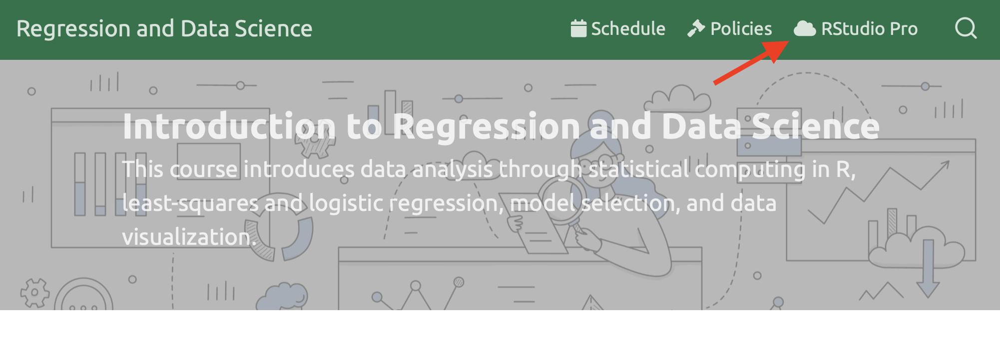
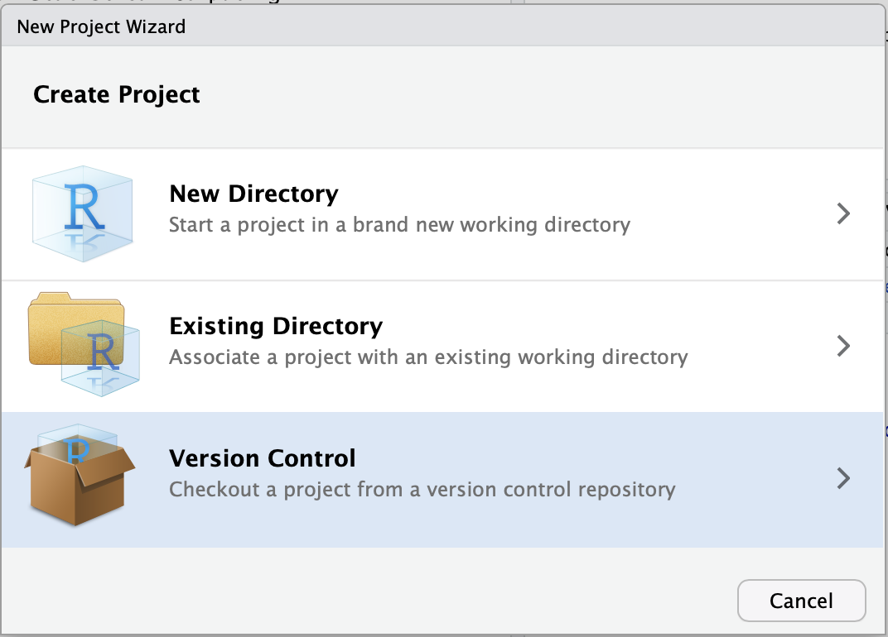

Appex 07 – Linear Regression in R
STA 363 - Spring 2023
Set up
Login to RStudio Pro
- Note: if you are off campus, you will need to use a VPN to connect
- Go to rstudio.deac.wfu.edu

Step 1: Create a New Project
Click File > New Project

Step 2: Click “Version Control”
Click the third option.

Step 3: Click Git
Click the first option

Step 4: Copy my starter files
Paste this link in the top box (Repository url):
https://github.com/sta-363-s23/08-appex.git

Part 1
- Fit a linear model using the
mtcarsdata frame predicting miles per gallon (mpg) from weight and horsepower (wtandhp), using polynomials with 4 degrees of freedom for both. - Pull out the coefficients and confidence intervals using the
tidy()function demonstrated. How do you interpret these?
Part 2
- Using the linear model you fit previously (
mpgfromwtandhp, using polynomials with 4 degrees of freedom for both with themtcarsdata) - calculate the p-value for the coefficient for weight - Interpret this value. What is the null hypothesis? What is the alternative hypothesis? Do you reject the null?
Part 3
- Using the model previously fit (
mpgfromwtandhp, using polynomials with 4 degrees of freedom for both with themtcarsdata), estimate the training \(R^2\) using thersqfunction. - Interpret this values.
Part 4
- Create a cross validation object to do 5 fold cross validation using the
mtcarsdata - Refit the model on this object (using
fit_resamples) - Use
collect_metricsto estimate the test \(R^2\) - how does this compare to the training \(R^2\) calculated in the previous exercise?